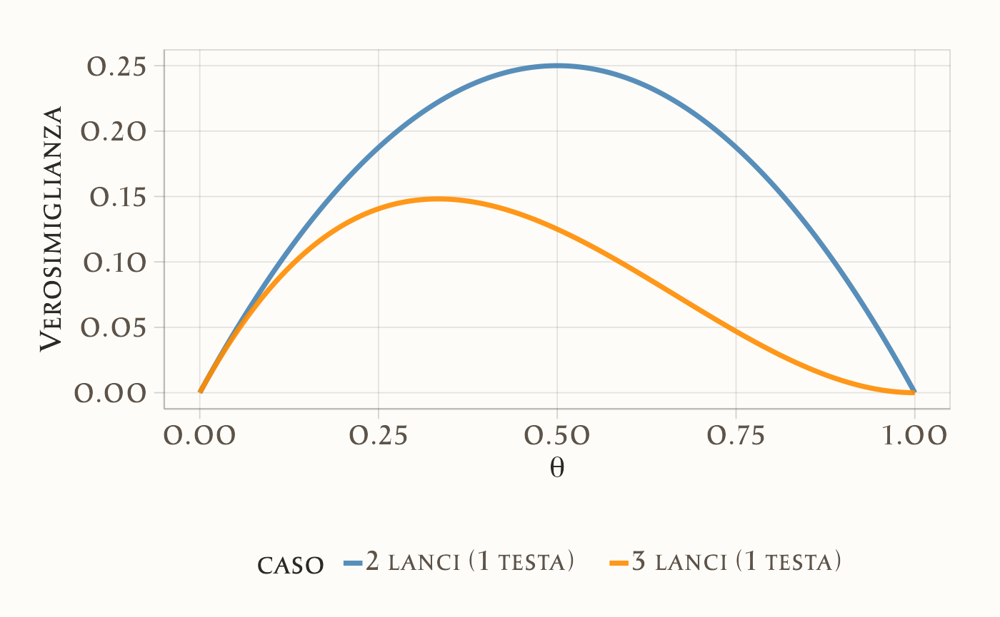

40 La verosimiglianza
- Comprendere il concetto di verosimiglianza: Scoprirai il ruolo fondamentale che la verosimiglianza svolge nella stima dei parametri statistici.
-
Generare grafici della funzione di verosimiglianza:
- Implementare grafici per la funzione di verosimiglianza nel caso binomiale.
- Interpretare i grafici della funzione di verosimiglianza: Sviluppare le competenze necessarie per analizzare e trarre conclusioni dai grafici generati.
- Capire il principio di stima di massima verosimiglianza (MLE): Approfondiremo il metodo di stima di massima verosimiglianza.
- Leggere il capitolo Estimation (Schervish & DeGroot, 2014).
- Leggere il capitolo Bayes’ rule (Johnson et al., 2022).
Introduzione
I ricercatori utilizzano diversi modelli matematici per descrivere e prevedere il comportamento dei dati osservati. Questi modelli si distinguono tra loro per la struttura funzionale, ovvero il modo in cui collegano le variabili osservate con parametri teorici. La scelta del modello migliore avviene confrontando le previsioni teoriche generate dal modello con i dati effettivamente osservati. Il modello che produce previsioni più vicine ai dati reali viene considerato il più adeguato per descrivere il fenomeno studiato.
In questo processo di confronto, la funzione di verosimiglianza gioca un ruolo fondamentale. Essa quantifica la probabilità che i dati osservati siano stati generati da un particolare modello con determinati valori dei suoi parametri. In altre parole, la verosimiglianza misura quanto i dati siano compatibili con il modello ipotizzato.
40.1 Il Principio della Verosimiglianza e la sua Formalizzazione
La verosimiglianza quantifica quanto i dati osservati siano compatibili con diversi valori dei parametri di un modello. In termini più semplici, la verosimiglianza indica quanto ciascun valore possibile dei parametri sia plausibile nel descrivere il fenomeno osservato.
Definizione 40.1 Consideriamo un vettore aleatorio \(X\), la cui distribuzione è descritta da una funzione di densità di probabilità (nel caso di variabili continue) o da una funzione di massa di probabilità (nel caso di variabili discrete), indicata con \(f(x; \theta)\). Qui, \(\theta\) rappresenta un vettore di parametri che appartiene a uno spazio parametrico \(\Theta\). Una volta osservato un valore specifico \(x\) del vettore \(X\), possiamo definire la funzione di verosimiglianza per i parametri \(\theta\) come:
\[ L(\theta; x) = f(x; \theta). \]
Questa definizione evidenzia che la funzione di verosimiglianza si concentra sui parametri, mentre i dati sono fissati.
40.1.1 Relazione tra Verosimiglianza e Funzione di Probabilità
La formula matematica che collega i dati ai parametri è la stessa sia per la funzione di verosimiglianza che per la funzione di densità (o massa) di probabilità. Ciò che cambia è l’interpretazione e il modo in cui questa formula viene utilizzata nei due contesti.
Funzione di densità (o massa) di probabilità:
Questa funzione descrive il processo generativo dei dati, indicando la probabilità (o densità di probabilità, nel caso continuo) che un determinato valore dei dati venga osservato, supponendo che i parametri del modello siano già noti e fissati. Qui, quindi, i parametri sono fissi e i dati variano.Funzione di verosimiglianza:
La funzione di verosimiglianza inverte questo punto di vista. In essa, i dati osservati sono fissati, mentre i parametri \(\theta\) variano. La verosimiglianza misura la plausibilità di ciascun valore possibile dei parametri nel descrivere i dati che sono stati effettivamente osservati. In sostanza, valuta la compatibilità di ogni valore dei parametri rispetto ai dati raccolti.
Formalmente, la relazione tra queste due funzioni può essere espressa come:
\[ L(\theta \mid y) \propto p(y \mid \theta), \]
dove:
- \(L(\theta \mid y)\) rappresenta la funzione di verosimiglianza, ossia la plausibilità dei parametri \(\theta\) alla luce dei dati osservati \(y\);
- \(p(y \mid \theta)\) indica la funzione di densità (o massa) di probabilità, cioè la probabilità di osservare i dati \(y\) assumendo che i parametri \(\theta\) siano già noti e fissi.
In sintesi, la funzione di probabilità risponde alla domanda “dato un certo insieme di parametri, quanto è probabile osservare questi dati?”, mentre la funzione di verosimiglianza si pone la domanda opposta: “dati questi dati osservati, quali valori dei parametri sono più plausibili?” Questa distinzione è fondamentale per l’inferenza statistica e per determinare i parametri più adatti a descrivere i fenomeni osservati.
40.2 Sequenza di Lanci di una Moneta
Per comprendere meglio il concetto di verosimiglianza, partiamo da un esempio semplice. Supponiamo di voler stimare la probabilità di ottenere testa in un lancio di moneta, indicata con \(p_H\). L’obiettivo è capire quali valori di \(p_H\) rendano più plausibili i dati osservati. Per farlo, calcoliamo la probabilità di osservare sequenze specifiche di lanci di una moneta assumendo che ogni lancio sia indipendente dagli altri.
40.2.1 Perché moltiplichiamo le probabilità?
Quando lanciamo una moneta più volte, ogni lancio rappresenta un evento indipendente: il risultato di un lancio non influenza il successivo. Questo significa che la probabilità di osservare una specifica sequenza di successi (teste) e insuccessi (croci) si calcola moltiplicando le probabilità dei singoli eventi.
Ad esempio, consideriamo una moneta con probabilità \(p_H\) di ottenere testa e \(1 - p_H\) di ottenere croce. Se osserviamo la sequenza HTHT, la probabilità di ottenere questa specifica sequenza è:
\[ P(HTHT \mid p_H) = p_H \cdot (1 - p_H) \cdot p_H \cdot (1 - p_H) = p_H^2 (1 - p_H)^2. \]
Se invece osserviamo una sequenza diversa, come THTH o HHTT, la probabilità sarà sempre \(p_H^2 (1 - p_H)^2\). Questo avviene perché l’ordine specifico dei risultati non influisce sulla probabilità complessiva della sequenza, finché il numero totale di successi e insuccessi rimane lo stesso.
40.2.2 Generalizzazione della Probabilità di una Sequenza
In generale, se osserviamo \(n\) lanci di una moneta e registriamo \(y\) successi (teste) e \(n - y\) insuccessi (croci), la probabilità di ottenere una qualsiasi sequenza con esattamente \(y\) teste e \(n - y\) croci è:
\[ P(Y = y \mid p_H) = p_H^y (1 - p_H)^{n - y}. \tag{40.1}\]
Questa formula rappresenta la funzione di verosimiglianza, che misura la compatibilità tra i dati osservati e un dato valore di \(p_H\). In altre parole, ci dice quanto sia plausibile che il parametro \(p_H\) abbia un determinato valore, dati i risultati osservati.
40.2.3 Connessione con la Distribuzione Binomiale
A questo punto, dovrebbe risultare evidente che l’equazione Equazione 40.1 è il nucleo della distribuzione binomiale. Infatti, la funzione di probabilità della distribuzione binomiale completa è:
\[ P(Y = y \mid p_H) = \binom{n}{y} p_H^y (1 - p_H)^{n - y}. \]
La differenza tra questa formula e la funzione di verosimiglianza è il coefficiente binomiale \(\binom{n}{y}\), che rappresenta il numero di modi in cui possiamo ottenere esattamente \(y\) successi in \(n\) lanci.
Possiamo rimuovere questa costante nella funzione di verosimiglianza perché non dipende dal parametro \(p_H\) che vogliamo stimare. Poiché il nostro obiettivo è trovare il valore di \(p_H\) che massimizza la funzione di verosimiglianza, qualsiasi termine costante rispetto a \(p_H\) non influenzerà il risultato della massimizzazione.
Nota: il coefficiente binomiale modifica l’altezza della verosimiglianza ma non la posizione del massimo, permettendo di ignorarlo nei calcoli di stima.
Per questo motivo, nella ricerca della stima di massima verosimiglianza, possiamo considerare solo il nucleo della funzione binomiale:
\[ L(p_H \mid y) = p_H^y (1 - p_H)^{n - y}. \tag{40.2}\]
Questa semplificazione ci permette di concentrarci solo sui valori di \(p_H\) che rendono la funzione più alta, ignorando costanti moltiplicative che non influiscono sulla posizione del massimo.
40.3 Esempi di Verosimiglianza senza la Binomiale
40.3.1 Caso 1: Due Lanci
Supponiamo di lanciare una moneta due volte e di osservare una testa e una croce. Per stimare \(p_H\), calcoliamo la probabilità di osservare questa specifica sequenza per diversi valori di \(p_H\).
-
Se la moneta è equa (\(p_H = 0.5\)):
\[ P(H, T \mid p_H = 0.5) = 0.5 \times 0.5 = 0.25. \]
-
Se invece \(p_H = 0.4\):
\[ P(H, T \mid p_H = 0.4) = 0.4 \times 0.6 = 0.24. \]
In generale, la funzione di verosimiglianza per questo esperimento è:
\[ L(p_H) = p_H^1 (1 - p_H)^1. \]
Possiamo rappresentarla graficamente con il seguente codice R:
# Definizione dei parametri
n <- 2 # Numero totale di lanci
y <- 1 # Numero di teste osservate
# Sequenza di valori possibili per p_H
p_H <- seq(0, 1, length.out = 100)
# Calcolo della funzione di verosimiglianza
likelihood <- p_H^y * (1 - p_H)^(n - y)
# Creazione del dataframe
data <- data.frame(p_H, likelihood)
# Grafico della funzione di verosimiglianza
ggplot(data, aes(x = p_H, y = likelihood)) +
geom_line(color = "blue", linewidth = 1) +
labs(
title = "Verosimiglianza per 2 Lanci di Moneta (1 Testa, 1 Croce)",
x = expression(p[H]),
y = "Verosimiglianza"
) 
40.3.2 Caso 2: Tre Lanci
Ora immaginiamo di aver lanciato la moneta tre volte e di aver osservato una testa e due croci. La probabilità di ottenere questa specifica sequenza per diversi valori di \(p_H\) è:
-
Se \(p_H = 0.5\):
\[ P(H, T, T \mid p_H = 0.5) = 0.5 \times 0.5 \times 0.5 = 0.125. \]
-
Se \(p_H = 0.4\):
\[ P(H, T, T \mid p_H = 0.4) = 0.4 \times 0.6 \times 0.6 = 0.144. \]
La funzione di verosimiglianza per questo esperimento è:
\[ L(p_H) = p_H^1 (1 - p_H)^2. \]
Possiamo rappresentarla graficamente con il seguente codice R:
# Definizione dei parametri
n <- 3 # Numero totale di lanci
y <- 1 # Numero di teste osservate
# Sequenza di valori possibili per p_H
p_H <- seq(0, 1, length.out = 100)
# Calcolo della funzione di verosimiglianza
likelihood <- p_H^y * (1 - p_H)^(n - y)
# Creazione del dataframe
data <- data.frame(p_H, likelihood)
# Grafico della funzione di verosimiglianza
ggplot(data, aes(x = p_H, y = likelihood)) +
geom_line(color = "blue", linewidth = 1) +
labs(
title = "Verosimiglianza per 3 Lanci di Moneta (1 Testa, 2 Croci)",
x = expression(p[H]),
y = "Verosimiglianza"
) 
40.3.3 Interpretazione dei Risultati
Osservando i grafici, possiamo notare che:
- La funzione di verosimiglianza è massima per valori di \(p_H\) vicini alla proporzione osservata nel campione. Ad esempio, se abbiamo ottenuto 1 testa su 2 lanci, la verosimiglianza è massima intorno a \(p_H = 0.5\).
- Quando aumentiamo il numero di lanci, la funzione di verosimiglianza diventa più stretta, indicando che più dati permettono una stima più precisa di \(p_H\).
- Per valori estremi di \(p_H\) (molto vicini a 0 o 1), la verosimiglianza è bassa, poiché questi valori non spiegano bene i dati osservati. Ad esempio, se abbiamo osservato 1 testa e 2 croci, un valore di \(p_H = 0.9\) avrebbe una verosimiglianza molto bassa.
Questa sezione ha mostrato come calcolare la verosimiglianza basandoci solo sul prodotto delle probabilità dei singoli lanci (senza utilizzare la distribuzione binomiale). Nella prossima sezione, useremo la formula completa della distribuzione binomiale per formalizzare ulteriormente il concetto.
40.4 Esempio di Verosimiglianza con la Binomiale
Consideriamo ora un esperimento più esteso: lanciamo una moneta \(n = 30\) volte e otteniamo \(y = 23\) teste. Per modellare il numero di successi, utilizziamo la distribuzione binomiale, che descrive la probabilità di osservare esattamente \(y\) successi in \(n\) prove indipendenti:
\[ P(Y = y \mid \theta) = \binom{n}{y} \theta^y (1 - \theta)^{n - y}. \]
Poiché il coefficiente binomiale \(\binom{n}{y}\) è una costante rispetto a \(\theta\), possiamo considerare la funzione di verosimiglianza, che esprime la probabilità dei dati osservati come funzione del parametro \(\theta\):
\[ L(\theta \mid y) = \theta^{23} (1 - \theta)^7. \]
40.4.1 Visualizzazione della Funzione di Verosimiglianza
Il seguente codice R genera il grafico della funzione di verosimiglianza per diversi valori di \(\theta\):
# Definizione dei parametri
n <- 30 # Numero totale di lanci
y <- 23 # Numero di teste osservate
# Sequenza di valori possibili per p_H (probabilità di ottenere testa)
p_H <- seq(0, 1, length.out = 1000)
# Calcolo della funzione di verosimiglianza binomiale
likelihood <- dbinom(y, size = n, prob = p_H)
# Creazione del dataframe per la visualizzazione
data <- data.frame(p_H, likelihood)
# Grafico della funzione di verosimiglianza
ggplot(data, aes(x = p_H, y = likelihood)) +
geom_line(color = "blue", linewidth = 1) +
labs(
title = "Funzione di Verosimiglianza per 30 Lanci di Moneta",
x = expression(p[H]),
y = "Verosimiglianza"
) 
Osservando il grafico, notiamo che la funzione di verosimiglianza raggiunge il suo massimo intorno a \(p_H \approx 0.77\). Questo significa che il valore di \(p_H\) che rende i dati osservati più plausibili è circa 0.77. Questo valore corrisponde alla stima di massima verosimiglianza (MLE) per la probabilità di ottenere testa, dato che abbiamo osservato 23 successi su 30 prove.
L’intuizione alla base di questo risultato è semplice: la funzione di verosimiglianza esprime quanto siano compatibili i dati osservati con ogni possibile valore di \(p_H\). Il valore che massimizza questa funzione rappresenta l’ipotesi più plausibile per il vero valore del parametro \(p_H\).
40.5 La Stima di Massima Verosimiglianza
Per trovare il valore di \(\theta\) che massimizza la funzione di verosimilianza, possiamo calcolare la derivata della log-verosimiglianza e risolvere. Nel caso dell’esempio, abbiamo:
\[ \ell(\theta) = 23 \log \theta + 7 \log (1 - \theta). \]
Derivando e ponendo uguale a zero:
\[ \frac{d \ell(\theta)}{d\theta} = \frac{23}{\theta} - \frac{7}{1 - \theta} = 0. \]
Risolviamo per \(\theta\):
\[ \theta_{MLE} = \frac{y}{n} = \frac{23}{30} \approx 0.767. \]
Questo significa che la stima di massima verosimiglianza della proporzione \(p\) è la proporzione osservata nel campione. Per comprenderlo intuitivamente, possiamo pensare alla funzione di verosimiglianza come a una curva che rappresenta la plausibilità dei diversi valori di \(p\) nel descrivere i dati osservati. Il valore più plausibile sarà quello che corrisponde al massimo della funzione di verosimiglianza, ossia la sua moda.
40.5.1 Un’Intuizione Geometrica
Possiamo immaginare di analizzare la funzione di verosimiglianza come se fosse un percorso collinare. Il punto più alto della collina rappresenta il valore di \(p\) che rende i dati più probabili. Se volessimo trovare il punto più alto in modo sistematico, potremmo misurare la pendenza della collina in ogni punto. Se la pendenza è positiva, significa che la funzione sta ancora crescendo; se è negativa, significa che sta diminuendo. Il massimo della funzione si trova nel punto in cui la pendenza è esattamente zero—cioè quando la tangente alla curva è una retta orizzontale.
Matematicamente, questa intuizione si traduce nel calcolo della derivata della funzione di verosimiglianza: il massimo della funzione si trova imponendo che la derivata sia uguale a zero. Vediamo questo procedimento formalmente.
40.5.1.1 Dimostrazione Formale per la Proporzione Campionaria
Supponiamo di avere un campione di \(n\) osservazioni, in cui abbiamo osservato \(y\) successi. Se i dati seguono una distribuzione binomiale, la funzione di verosimiglianza è:
\[ L(p) = p^y (1 - p)^{n - y}. \]
Per trovare il valore di \(p\) che massimizza questa funzione, calcoliamo la log-verosimiglianza (per semplificare i calcoli):
\[ \ell(p) = \log L(p) = y \log p + (n - y) \log (1 - p). \]
Deriviamo rispetto a \(p\):
\[ \frac{d\ell(p)}{dp} = \frac{y}{p} - \frac{n - y}{1 - p}. \]
Consideriamo la funzione di log-verosimiglianza per una sequenza di \(n\) lanci di una moneta, con \(y\) successi (teste) e \(n - y\) insuccessi (croci):
\[ \ell(p) = \log L(p) = y \log p + (n - y) \log (1 - p). \]
Vogliamo ora derivare rispetto a \(p\) per determinare il valore che massimizza la funzione di verosimiglianza.
Per farlo, utilizziamo le regole di derivazione dei logaritmi:
La derivata di \(\log p\) è: \[ \frac{d}{dp} \log p = \frac{1}{p}. \]
Per la derivata di \(\log(1 - p)\), notiamo che l’argomento del logaritmo è \(1 - p\), quindi dobbiamo applicare la regola della catena.
La regola della catena afferma che, se abbiamo una funzione composta \(f(g(p))\), la sua derivata si calcola come:
\[ \frac{d}{dp} \log g(p) = \frac{1}{g(p)} \cdot g'(p). \]
Nel nostro caso, poniamo:
\[ g(p) = 1 - p. \]
Derivandola rispetto a \(p\):
\[ g'(p) = \frac{d}{dp} (1 - p) = -1. \]
Applicando la regola della catena:
\[ \frac{d}{dp} \log(1 - p) = \frac{1}{1 - p} \cdot (-1) = -\frac{1}{1 - p}. \]
Ora possiamo calcolare la derivata della funzione di log-verosimiglianza:
\[ \frac{d\ell(p)}{dp} = y \cdot \frac{1}{p} + (n - y) \cdot \left(-\frac{1}{1 - p}\right). \]
Semplificando:
\[ \frac{d\ell(p)}{dp} = \frac{y}{p} - \frac{n - y}{1 - p}. \]
Imponiamo che la derivata sia zero:
\[ \frac{y}{p} - \frac{n - y}{1 - p} = 0. \]
Risolviamo per \(p\):
\[ y(1 - p) = (n - y) p. \]
\[ y - yp = np - yp. \]
\[ y = np. \]
\[ \hat{p} = \frac{y}{n}. \]
Dunque, la stima di massima verosimiglianza della proporzione è la proporzione campionaria \(\hat{p} = \frac{y}{n}\), che corrisponde esattamente all’intuizione che il valore più plausibile per \(p\) è quello che meglio rappresenta i dati osservati.
40.6 Stima di Massima Verosimiglianza (MLE) con R
La stima di massima verosimiglianza (MLE) corrisponde al valore del parametro \(\theta\) che massimizza la funzione di verosimiglianza \(L(\theta; X)\) associata al modello statistico. Mentre in precedenza abbiamo derivato analiticamente lo stimatore MLE risolvendo l’equazione di verosimiglianza, in molti casi pratici—specialmente con modelli complessi—è preferibile adottare un approccio numerico. Questo metodo prevede il calcolo diretto della verosimiglianza su un intervallo di valori plausibili per \(\theta\) e l’identificazione del punto di massimo tramite algoritmi di ottimizzazione.
Nel contesto di un modello binomiale, possiamo implementare questa strategia in R seguendo due strade:
-
Valutazione su griglia: generare una sequenza di valori per \(\theta\) (es. da 0 a 1), calcolare \(L(\theta; X)\) per ogni valore utilizzando
dbinom(), e individuare il massimo conwhich.max().
-
Ottimizzazione numerica: utilizzare funzioni come
optim()onlm()per trovare iterativamente il \(\theta\) che massimizza la log-verosimiglianza, garantendo efficienza anche in casi multidimensionali.
Illustreremo entrambe le metodologie. Iniziamo con la valutazione su griglia:
# Parametri
n <- 30
y <- 23
theta <- seq(0, 1, length.out = 10000)
# Calcolo delle probabilità binomiali
probabilities <- dbinom(y, size = n, prob = theta)
# Identificazione dell'indice del massimo
max_index <- which.max(probabilities)
# Recupero del valore di theta corrispondente
optimal_theta <- theta[max_index]
optimal_theta
#> [1] 0.7667Spiegazione del codice:
-
dbinom(y, size = n, prob = theta)calcola la probabilità di osservare esattamente \(y\) successi su \(n\) tentativi, per ciascun valore di \(\theta\). -
which.max(probabilities)trova l’indice del valore massimo nella sequenza delle probabilità. -
theta[max_index]restituisce il valore di \(\theta\) corrispondente al massimo trovato.
Consideriamo ora il metodo di ottimizzazione numerica:
# Funzione di log-verosimiglianza (negativa per minimizzazione)
neg_log_likelihood <- function(theta) {
- (y * log(theta) + (n - y) * log(1 - theta)) # Formula binomiale
}
# Ottimizzazione con metodo Brent (specifico per problemi 1D)
result <- optim(
par = 0.5, # Valore iniziale
fn = neg_log_likelihood,
method = "Brent", # Ottimizzazione con limiti
lower = 1e-6, # Evita theta = 0 (log(0) = -Inf)
upper = 1 - 1e-6 # Evita theta = 1
)
optimal_theta_numerical <- result$par
optimal_theta_numerical
#> [1] 0.7667Spiegazione del codice:
-
neg_log_likelihoodcalcola la log-verosimiglianza negativa (necessaria perchéoptim()minimizza per default).
-
optim()cerca il minimo della funzione tralowereupperusando l’algoritmo Brent, ottimizzato per problemi unidimensionali.
- I limiti
1e-6e1 - 1e-6evitano valori di \(\theta\) estremi che generanoNaNnel logaritmo.
Il risultato finale coincide esattamente con la soluzione analitica \(\hat{\theta} = y/n\) (≈ 0.7667).
# Confronto con la soluzione analitica (y/n)
c("Numerico" = optimal_theta_numerical, "Analitico" = y/n)
#> Numerico Analitico
#> 0.7667 0.7667Confronto degli approcci
| Metodo | Vantaggi | Limiti |
|---|---|---|
| Valutazione su griglia | Intuitivo, visivo | Computazionalmente costoso |
| Ottimizzazione numerica | Efficiente, scalabile a parametri multipli | Richiede scelta di algoritmo e parametri iniziali |
40.7 Verosimiglianza Congiunta: Estensione del Concetto di Verosimiglianza
Abbiamo visto che, nel caso di una sequenza di \(n\) lanci di una moneta, la funzione di verosimiglianza si basa sulla distribuzione binomiale. In questo caso, trattiamo un esperimento Bernoulliano ripetuto \(n\) volte, e la nostra osservazione è il numero totale di successi (teste). Il numero complessivo di successi segue una distribuzione binomiale, e la funzione di verosimiglianza assume la forma:
\[ \mathcal{L}(\theta) = P(Y = y \mid \theta) = \binom{n}{y} \theta^y (1 - \theta)^{n - y}. \]
Qui la verosimiglianza è espressa direttamente in termini del numero totale di successi e insuccessi, senza dover scrivere il contributo di ogni singolo lancio.
Tuttavia, possiamo affrontare la questione da una prospettiva diversa: invece di considerare il numero totale di successi, possiamo pensare alla verosimiglianza come il prodotto delle probabilità di ogni singolo lancio. Questo ci porta a una generalizzazione importante: la verosimiglianza congiunta di più osservazioni indipendenti.
40.7.1 Dal Caso Binomiale alla Verosimiglianza Congiunta
Nel caso dei lanci della moneta, le singole osservazioni sono prove Bernoulliane indipendenti, ovvero ogni singolo lancio è un’osservazione indipendente che segue una distribuzione Bernoulli con parametro \(\theta\):
\[ P(Y_i = 1 \mid \theta) = \theta, \quad P(Y_i = 0 \mid \theta) = 1 - \theta. \]
Se trattiamo ogni prova individualmente, la funzione di verosimiglianza per una singola osservazione è:
\[ \mathcal{L}(\theta \mid y_i) = \theta^{y_i} (1 - \theta)^{1 - y_i}. \]
Ora, per un campione di \(n\) osservazioni indipendenti, la verosimiglianza congiunta è il prodotto delle verosimiglianze delle singole osservazioni:
\[ \mathcal{L}(\theta \mid y_1, y_2, \dots, y_n) = \prod_{i=1}^{n} \theta^{y_i} (1 - \theta)^{1 - y_i}. \]
Riconosciamo che questa espressione è identica alla funzione di verosimiglianza della distribuzione binomiale, perché il numero totale di successi è:
\[ y = \sum_{i=1}^{n} y_i. \]
Quindi, riscrivendo la verosimiglianza congiunta, otteniamo:
\[ \mathcal{L}(\theta) = \theta^{\sum y_i} (1 - \theta)^{n - \sum y_i} = \theta^y (1 - \theta)^{n - y}. \]
Questa è proprio la verosimiglianza della distribuzione binomiale! Questo mostra che il caso binomiale può essere visto come una forma compatta di verosimiglianza congiunta per prove Bernoulliane indipendenti.
40.8 Perché è Importante la Verosimiglianza Congiunta?
L’idea della verosimiglianza congiunta è fondamentale perché ci permette di estendere i concetti di verosimiglianza dal caso di una singola osservazione al caso di molte osservazioni indipendenti. Questo è utile in molti contesti statistici:
- Stimare parametri basandosi su un intero campione invece che su una singola osservazione.
- Definire modelli statistici più complessi, in cui le osservazioni sono indipendenti ma possono avere diverse distribuzioni.
- Applicare la log-verosimiglianza per rendere più agevole il calcolo e l’ottimizzazione.
In sintesi, l’esempio binomiale mostra che la verosimiglianza congiunta di prove Bernoulliane indipendenti si riconduce alla verosimiglianza binomiale, rendendo il concetto meno evidente a prima vista. Tuttavia, la vera potenza della verosimiglianza congiunta si manifesta in distribuzioni continue come la normale, dove la produttoria delle densità di probabilità per singole osservazioni è chiaramente distinta dalla funzione di verosimiglianza per il campione intero.
La chiave per comprendere il concetto è rendersi conto che la verosimiglianza di un’intera sequenza di prove indipendenti è il prodotto delle singole verosimiglianze, e che nel caso binomiale questa proprietà si manifesta in modo più compatto grazie alla forma stessa della distribuzione.
40.9 Esempio: Osservazioni Raggruppate
Per illustrare il concetto di verosimiglianza congiunta nel caso della distribuzione binomiale, consideriamo quattro gruppi distinti di osservazioni binomiali indipendenti:
- Gruppo 1: 23 successi su 30 prove.
- Gruppo 2: 20 successi su 28 prove.
- Gruppo 3: 29 successi su 40 prove.
- Gruppo 4: 29 successi su 36 prove.
Poiché ogni gruppo segue una distribuzione binomiale indipendente con lo stesso parametro \(\theta\), la log-verosimiglianza congiunta si ottiene sommando le log-verosimiglianze di ciascun gruppo:
\[ \log \mathcal{L}(\theta) = \sum_{i=1}^{4} \left[ y_i \log(\theta) + (n_i - y_i) \log(1 - \theta) \right], \]
dove:
- \(n_i\) è il numero totale di prove nel gruppo \(i\),
- \(y_i\) è il numero di successi nel gruppo \(i\).
Sostituendo i valori specifici:
\[ \begin{aligned} \log \mathcal{L}(\theta) &= [23\log(\theta) + (30-23)\log(1 - \theta)] +\\ &\quad [20\log(\theta) + (28-20)\log(1 - \theta)] +\\ &\quad [29\log(\theta) + (40-29)\log(1 - \theta)] +\\ &\quad [29\log(\theta) + (36-29)\log(1 - \theta)]. \end{aligned} \]
Questa formula ci permette di calcolare quanto è plausibile il valore del parametro \(\theta\), tenendo conto simultaneamente di tutte le osservazioni nei quattro gruppi.
40.9.1 Implementazione in R
Consideriamo ora un’implementazione pratica in R, che ci consenta di stimare \(\theta\) massimizzando la log-verosimiglianza congiunta.
Definiamo una funzione che calcola la log-verosimiglianza congiunta per un dato valore di \(\theta\):
log_verosimiglianza_congiunta <- function(theta, dati) {
# Per evitare problemi numerici, limitiamo theta tra (0,1)
theta <- pmax(pmin(theta, 1 - 1e-10), 1e-10)
log_likelihood <- 0
for (gruppo in dati) {
n <- gruppo[1] # Numero totale di prove nel gruppo
y <- gruppo[2] # Numero di successi nel gruppo
log_likelihood <- log_likelihood + y * log(theta) + (n - y) * log(1 - theta)
}
return(-log_likelihood) # Restituiamo il valore negativo per la minimizzazione
}Inseriamo i dati dei quattro gruppi in una lista:
Per trovare il valore di \(\theta\) che massimizza la log-verosimiglianza congiunta, utilizziamo la funzione optim():
result <- optim(
par = 0.5, # Valore iniziale di theta
fn = log_verosimiglianza_congiunta, # Funzione da minimizzare
dati = dati_gruppi, # Dati dei gruppi
method = "L-BFGS-B", # Metodo numerico con limiti
lower = 0, # Theta deve rimanere tra 0 e 1
upper = 1
)
# Stima ottimale di theta
result$par
#> [1] 0.7537La funzione optim() minimizza la funzione data, perciò passiamo il negativo della log-verosimiglianza per ottenere il massimo della verosimiglianza.
Vediamo ora come varia la log-verosimiglianza per diversi valori di \(\theta\):
theta_values <- seq(0.01, 0.99, length.out = 100)
log_likelihood_values <- sapply(theta_values, function(t) log_verosimiglianza_congiunta(t, dati_gruppi))
ggplot(
data.frame(theta = theta_values, log_likelihood = log_likelihood_values),
aes(x = theta, y = log_likelihood)
) +
geom_line(color = "blue") +
labs(
title = "Funzione di Log-Verosimiglianza Congiunta",
x = "Theta",
y = "Log-verosimiglianza negativa"
)
Questa curva mostra il comportamento della funzione di log-verosimiglianza, consentendoci di individuare visivamente il valore di \(\theta\) che la massimizza.
In sintesi, la log-verosimiglianza congiunta ci permette di considerare tutti i dati disponibili simultaneamente per ottenere una stima più affidabile del parametro \(\theta\). In questo esempio, abbiamo visto come:
- La log-verosimiglianza di più gruppi indipendenti si somma.
- Possiamo stimare \(\theta\) numericamente utilizzando
optim(). - È utile visualizzare la log-verosimiglianza per comprendere come varia rispetto a \(\theta\).
Questo approccio è fondamentale in inferenza statistica e può essere esteso a molti altri contesti in cui abbiamo più gruppi di dati indipendenti.
40.10 La Verosimiglianza Marginale
La verosimiglianza marginale è un concetto fondamentale nell’inferenza bayesiana, utilizzato per valutare quanto un modello sia compatibile con i dati osservati, tenendo conto dell’incertezza sui parametri.
A differenza della verosimiglianza standard, che misura la plausibilità dei dati per un valore fisso del parametro, la verosimiglianza marginale considera tutti i possibili valori del parametro, pesandoli in base alla loro probabilità a priori. Questo approccio permette di integrare l’incertezza nella valutazione del modello.
40.10.1 Caso con Parametri Discreti
Per comprendere meglio il concetto, consideriamo un esperimento in cui eseguiamo 10 tentativi e otteniamo 7 successi. Supponiamo che la probabilità di successo \(\theta\) possa assumere solo tre valori discreti:
\[ \theta \in \{0.1, 0.5, 0.9\}. \]
Per calcolare la verosimiglianza marginale, dobbiamo:
-
Assegnare una probabilità a priori a ciascun valore di \(\theta\), ad esempio:
- Distribuzione uniforme: \[ p(\theta = 0.1) = p(\theta = 0.5) = p(\theta = 0.9) = \frac{1}{3}. \]
- Distribuzione non uniforme (ad esempio, dando più peso a \(\theta = 0.5\)): \[ p(\theta = 0.1) = \frac{1}{4}, \quad p(\theta = 0.5) = \frac{1}{2}, \quad p(\theta = 0.9) = \frac{1}{4}. \]
-
Calcolare la probabilità di osservare 7 successi su 10 prove per ogni valore di \(\theta\):
\[ p(k=7 \mid \theta) = \binom{10}{7} \theta^7 (1 - \theta)^3. \]
-
Moltiplicare ciascuna di queste probabilità per la corrispondente probabilità a priori e sommare i risultati:
\[ p(k=7 \mid n=10) = \sum_{i} p(k=7 \mid \theta_i) p(\theta_i). \]
Sostituendo i valori per la distribuzione uniforme:
\[ p(k=7 \mid n=10) = \binom{10}{7} 0.1^7 (0.9)^3 \cdot \frac{1}{3} + \binom{10}{7} 0.5^7 (0.5)^3 \cdot \frac{1}{3} + \binom{10}{7} 0.9^7 (0.1)^3 \cdot \frac{1}{3}. \]
Questa somma rappresenta la verosimiglianza marginale, ossia la probabilità di ottenere 7 successi su 10, considerando tutte le possibili incertezze su \(\theta\).
40.10.2 Caso con Parametri Continui
Nella maggior parte delle situazioni, il parametro \(\theta\) non assume solo pochi valori discreti, ma può variare continuamente in un intervallo (ad esempio, tra 0 e 1). In questo caso, invece di sommare, dobbiamo integrare:
\[ p(k=7 \mid n=10) = \int_{0}^{1} \binom{10}{7} \theta^7 (1 - \theta)^3 p(\theta) \, d\theta. \]
Qui:
- \(p(\theta)\) è la distribuzione a priori di \(\theta\).
- L’integrale rappresenta una media ponderata della probabilità di ottenere i dati, considerando tutti i valori di \(\theta\).
Ad esempio, se \(\theta \sim \text{Beta}(2,2)\), la verosimiglianza marginale diventa:
\[ p(k=7 \mid n=10) = \int_{0}^{1} \binom{10}{7} \theta^7 (1 - \theta)^3 \frac{\theta (1-\theta)}{B(2,2)} \, d\theta. \]
Questo tipo di calcolo viene spesso risolto numericamente.
40.10.3 Calcolo Numerico della Verosimiglianza Marginale in R
Se vogliamo calcolare la verosimiglianza marginale numericamente, possiamo usare l’integrazione numerica in R.
Caso con Parametri Discreti.
# Definiamo i valori possibili di theta e le probabilità a priori
theta_vals <- c(0.1, 0.5, 0.9)
prior_probs <- c(1/3, 1/3, 1/3) # Distribuzione uniforme
# Calcoliamo la verosimiglianza per ciascun valore di theta
likelihoods <- dbinom(7, size = 10, prob = theta_vals)
# Calcoliamo la verosimiglianza marginale sommando i contributi ponderati
marginal_likelihood <- sum(likelihoods * prior_probs)
print(marginal_likelihood)
#> [1] 0.0582Caso con Parametri Continui.
# Definiamo la funzione di verosimiglianza pesata dalla prior
integrand <- function(theta) {
dbinom(7, size = 10, prob = theta) * dbeta(theta, shape1 = 2, shape2 = 2)
}
# Eseguiamo l'integrazione numerica
marginal_likelihood <- integrate(integrand, lower = 0, upper = 1)$value
print(marginal_likelihood)
#> [1] 0.111940.10.4 Interpretazione della Verosimiglianza Marginale
La verosimiglianza marginale rappresenta la probabilità complessiva dei dati, tenendo conto di tutte le possibili incertezze sul parametro \(\theta\).
- Se la verosimiglianza marginale è alta, significa che il modello nel suo insieme è compatibile con i dati osservati.
- Se la verosimiglianza marginale è bassa, significa che, indipendentemente dal valore di \(\theta\), il modello non spiega bene i dati.
A differenza della verosimiglianza classica, che valuta quanto siano probabili i dati per un singolo valore di \(\theta\), la verosimiglianza marginale considera tutte le possibili ipotesi sul parametro.
40.10.5 Ruolo nella Statistica Bayesiana
La verosimiglianza marginale svolge un ruolo cruciale nell’inferenza bayesiana perché appare nella formula di Bayes:
\[ p(\theta \mid D) = \frac{p(D \mid \theta) p(\theta)}{p(D)}, \]
dove \(p(D)\) è la verosimiglianza marginale. Questa quantità: 1. Serve da fattore di normalizzazione per la distribuzione a posteriori \(p(\theta \mid D)\). 2. Permette di confrontare modelli diversi, attraverso il fattore di Bayes:
\[ BF = \frac{p(D \mid M_1)}{p(D \mid M_2)}, \]
dove \(M_1\) e \(M_2\) sono due modelli diversi.
In conclusione, la verosimiglianza marginale è un concetto chiave nell’inferenza bayesiana, che ci permette di valutare quanto un modello sia coerente con i dati, tenendo conto di tutte le possibili incertezze sui parametri.
- Per parametri discreti, si calcola come una somma ponderata.
- Per parametri continui, si calcola con un integrale.
- È essenziale per il calcolo della distribuzione a posteriori e per il confronto tra modelli.
40.11 Riflessioni Conclusive
La funzione di verosimiglianza rappresenta un ponte fondamentale tra i dati osservati e i parametri di un modello statistico, offrendo una misura della plausibilità dei dati rispetto a diversi valori possibili dei parametri. La sua costruzione richiede l’integrazione di tre elementi chiave: il modello statistico ipotizzato come generatore dei dati, lo spazio dei parametri associato al modello e le osservazioni empiriche disponibili.
Nell’ambito dell’inferenza statistica, la funzione di verosimiglianza svolge un ruolo centrale. Essa consente di valutare quanto bene diversi valori dei parametri siano in grado di spiegare i dati osservati, diventando così uno strumento essenziale per la stima dei parametri e la selezione del modello. La sua corretta applicazione è determinante per garantire analisi dati rigorose e interpretazioni affidabili dei risultati.
In sintesi, padroneggiare il concetto di verosimiglianza e saperlo applicare in modo appropriato sono competenze indispensabili per chi si occupa di ricerca empirica e analisi di dati complessi. La verosimiglianza non è solo uno strumento tecnico, ma un pilastro metodologico che supporta la comprensione e l’interpretazione dei fenomeni osservati attraverso modelli statistici.
Esercizi
Spiega ciascuno dei concetti seguenti con una frase:
- probabilità.
- funzione di massa di probabilità.
- funzione di densità di probabilità.
- distribuzione di probabilità.
- distribuzione di probabilità discreta.
- distribuzione di probabilità continua.
- funzione di distribuzione cumulativa (cdf).
- verosimiglianza
All’esame ti verrà chiesto di:
- Calcolare la funzione di verosimiglianza binomiale e riportare il valore della funzione in corrispondenza di specifici valori \(\theta\).
- Calcolare la stima di massima verosimiglianza.
- Rispondere a domande che implicano una adeguata comprensione del concetto di funzione di verosimiglianza.
Informazioni sull’Ambiente di Sviluppo
sessionInfo()
#> R version 4.4.2 (2024-10-31)
#> Platform: aarch64-apple-darwin20
#> Running under: macOS Sequoia 15.3.2
#>
#> Matrix products: default
#> BLAS: /Library/Frameworks/R.framework/Versions/4.4-arm64/Resources/lib/libRblas.0.dylib
#> LAPACK: /Library/Frameworks/R.framework/Versions/4.4-arm64/Resources/lib/libRlapack.dylib; LAPACK version 3.12.0
#>
#> locale:
#> [1] C/UTF-8/C/C/C/C
#>
#> time zone: Europe/Rome
#> tzcode source: internal
#>
#> attached base packages:
#> [1] stats graphics grDevices utils datasets methods base
#>
#> other attached packages:
#> [1] thematic_0.1.6 MetBrewer_0.2.0 ggokabeito_0.1.0 see_0.10.0
#> [5] gridExtra_2.3 patchwork_1.3.0 bayesplot_1.11.1 psych_2.4.12
#> [9] scales_1.3.0 markdown_1.13 knitr_1.49 lubridate_1.9.4
#> [13] forcats_1.0.0 stringr_1.5.1 dplyr_1.1.4 purrr_1.0.4
#> [17] readr_2.1.5 tidyr_1.3.1 tibble_3.2.1 ggplot2_3.5.1
#> [21] tidyverse_2.0.0 rio_1.2.3 here_1.0.1
#>
#> loaded via a namespace (and not attached):
#> [1] generics_0.1.3 stringi_1.8.4 lattice_0.22-6 hms_1.1.3
#> [5] digest_0.6.37 magrittr_2.0.3 evaluate_1.0.3 grid_4.4.2
#> [9] timechange_0.3.0 fastmap_1.2.0 rprojroot_2.0.4 jsonlite_1.9.1
#> [13] mnormt_2.1.1 cli_3.6.4 rlang_1.1.5 munsell_0.5.1
#> [17] withr_3.0.2 tools_4.4.2 parallel_4.4.2 tzdb_0.4.0
#> [21] colorspace_2.1-1 pacman_0.5.1 vctrs_0.6.5 R6_2.6.1
#> [25] lifecycle_1.0.4 htmlwidgets_1.6.4 pkgconfig_2.0.3 pillar_1.10.1
#> [29] gtable_0.3.6 glue_1.8.0 xfun_0.51 tidyselect_1.2.1
#> [33] rstudioapi_0.17.1 farver_2.1.2 htmltools_0.5.8.1 nlme_3.1-167
#> [37] labeling_0.4.3 rmarkdown_2.29 compiler_4.4.2